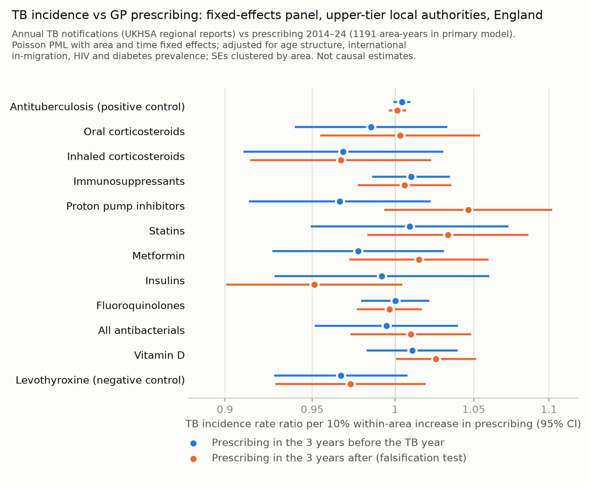

<title>Prescribing and TB in England</title>
<link rel="preconnect" href="https://fonts.googleapis.com">
<link rel="preconnect" href="https://fonts.gstatic.com" crossorigin>
<link rel="stylesheet" href="https://fonts.googleapis.com/css2?family=IBM+Plex+Sans+Condensed:wght@400;500;600&family=Source+Serif+4:ital,opsz,wght@0,8..60,400;0,8..60,600;1,8..60,400&display=swap">
<style>
  /* Palette from the Ziehl–Neelsen stain: carbol fuchsin (accent) and methylene blue (links) */
  :root {
    color-scheme: light;
    --paper: #f6f7f5;
    --panel: #eceee9;
    --plate: #fcfcfb;
    --ink: #18202b;
    --muted: #5a6470;
    --rule: #d9dcd6;
    --fuchsin: #a3245e;
    --methylene: #2c5a86;
    --focus: #2c5a86;
    --display: "IBM Plex Sans Condensed", "Arial Narrow", "Helvetica Neue", Arial, sans-serif;
    --body: "Source Serif 4", "Iowan Old Style", Georgia, "Times New Roman", serif;
  }
  @media (prefers-color-scheme: dark) {
    :root:not([data-theme="light"]) {
      color-scheme: dark;
      --paper: #11161c;
      --panel: #19202a;
      --plate: #fcfcfb;
      --ink: #e4e8ec;
      --muted: #9aa4ae;
      --rule: #2a323c;
      --fuchsin: #e07aa6;
      --methylene: #86b4e0;
      --focus: #86b4e0;
    }
  }
  :root[data-theme="dark"] {
    color-scheme: dark;
    --paper: #11161c;
    --panel: #19202a;
    --plate: #fcfcfb;
    --ink: #e4e8ec;
    --muted: #9aa4ae;
    --rule: #2a323c;
    --fuchsin: #e07aa6;
    --methylene: #86b4e0;
    --focus: #86b4e0;
  }

  body {
    background: var(--paper);
    color: var(--ink);
    font-family: var(--body);
    font-size: 1.0625rem;
    line-height: 1.62;
    padding: 0 20px;
    font-optical-sizing: auto;
  }
  .article {
    max-width: 44rem;
    margin: 0 auto;
    padding-block: 3rem 5rem;
  }

  .masthead {
    display: grid;
    gap: 0.9rem;
    padding-bottom: 1.75rem;
    border-bottom: 1px solid var(--rule);
    margin-bottom: 2rem;
  }
  .kicker {
    display: flex;
    flex-wrap: wrap;
    gap: 0.35rem 1.25rem;
    font-family: var(--display);
    font-size: 0.8rem;
    letter-spacing: 0.08em;
    text-transform: uppercase;
    color: var(--muted);
  }
  .kicker .type { color: var(--fuchsin); font-weight: 600; }
  h1 {
    font-family: var(--display);
    font-weight: 600;
    font-size: clamp(1.7rem, 4.2vw, 2.45rem);
    line-height: 1.12;
    letter-spacing: -0.01em;
    margin: 0;
    text-wrap: balance;
  }
  .byline { font-family: var(--display); color: var(--muted); font-size: 0.95rem; margin: 0; }
  .thesis {
    margin: 0.4rem 0 0;
    font-size: 1.12rem;
    line-height: 1.5;
    font-style: italic;
    color: var(--ink);
    padding-left: 1rem;
    border-left: 3px solid var(--fuchsin);
    text-wrap: pretty;
  }

  h2 {
    font-family: var(--display);
    font-weight: 600;
    font-size: 1.05rem;
    letter-spacing: 0.1em;
    text-transform: uppercase;
    color: var(--fuchsin);
    margin: 3rem 0 0.9rem;
    padding-top: 0.9rem;
    border-top: 1px solid var(--rule);
  }
  h3 {
    font-family: var(--display);
    font-weight: 600;
    font-size: 1.2rem;
    margin: 2rem 0 0.5rem;
    text-wrap: balance;
  }
  p { margin: 0 0 1rem; text-wrap: pretty; }
  strong { font-weight: 600; }
  a { color: var(--methylene); text-underline-offset: 0.15em; }
  a:focus-visible { outline: 2px solid var(--focus); outline-offset: 2px; }
  ul, ol { padding-left: 1.4rem; margin: 0 0 1rem; }
  li { margin-bottom: 0.3rem; }
  sup { line-height: 0; }

  /* Structured abstract sits on a quiet panel (pandoc --section-divs puts ids on sections) */
  section#abstract {
    background: var(--panel);
    padding: 1.25rem 1.4rem 0.4rem;
    border-radius: 4px;
    margin-bottom: 1rem;
  }
  section#abstract h2 { margin-top: 0; border-top: 0; padding-top: 0; }
  section#abstract p, section#abstract li { font-size: 0.98rem; }
  section#abstract p strong:first-child {
    font-family: var(--display);
    letter-spacing: 0.04em;
    text-transform: uppercase;
    font-size: 0.82rem;
    color: var(--muted);
    margin-right: 0.25rem;
  }

  figure { margin: 2rem 0; }
  figure img {
    display: block;
    width: 100%;
    max-width: 100%;
    height: auto;
    background: var(--plate);
    border: 1px solid var(--rule);
    border-radius: 3px;
  }
  figcaption {
    font-family: var(--display);
    font-size: 0.9rem;
    line-height: 1.45;
    color: var(--muted);
    margin-top: 0.6rem;
  }
  figcaption strong { color: var(--fuchsin); }

  .table-wrap { overflow-x: auto; margin: 0.5rem 0 2rem; border-top: 2px solid var(--ink); border-bottom: 1px solid var(--ink); }
  table {
    border-collapse: collapse;
    width: 100%;
    min-width: 40rem;
    font-family: var(--display);
    font-size: 0.86rem;
    line-height: 1.35;
    font-variant-numeric: tabular-nums;
  }
  thead th {
    text-align: left;
    font-weight: 600;
    vertical-align: bottom;
    padding: 0.55rem 0.6rem;
    border-bottom: 1px solid var(--ink);
  }
  tbody td { padding: 0.45rem 0.6rem; border-bottom: 1px solid var(--rule); vertical-align: top; }
  tbody tr:last-child td { border-bottom: 0; }
  td:first-child { font-weight: 500; }
  p:has(+ .table-wrap) { font-family: var(--display); font-size: 0.92rem; color: var(--muted); margin-bottom: 0.4rem; }
  p:has(+ .table-wrap) strong { color: var(--fuchsin); }

  section#references ol, section#references p { font-size: 0.88rem; line-height: 1.5; color: var(--muted); }
  section#references li { padding-left: 0.2rem; overflow-wrap: anywhere; }

  @media (max-width: 480px) {
    body { font-size: 1rem; }
    .article { padding-block: 2rem 3rem; }
  }
</style>

<article class="article">
  <header class="masthead">
    <div class="kicker"><span class="type">Original research ·
Ecological study</span><span>Draft, 14 September 2026</span></div>
    <h1>Can open prescribing data detect medicine effects on
tuberculosis? An ecological study of primary care prescribing and TB
incidence in England, 2014–2024</h1>
    <p class="byline">[Authors to be confirmed]</p>
    <p class="thesis">For oral corticosteroids, the smallest effect
these data could detect (7.0% per 10% more prescribing) is about 20
times the effect expected from published relative risks (0.34%).</p>
  </header>
<section id="abstract" class="level2">
<h2>Abstract</h2>
<p><strong>Background.</strong> Several commonly prescribed medicines,
notably corticosteroids and other immunosuppressants, modify individual
risk of tuberculosis (TB). Openly published English prescribing and TB
surveillance data could, in principle, be linked to study these
relationships at population level. We assessed whether such ecological
analyses can detect drug–TB associations.</p>
<p><strong>Methods.</strong> We linked practice-level NHSBSA English
Prescribing Dataset records (2014–2024) for 12 pre-specified drug
groups, including a positive and a negative control exposure, to UKHSA
TB notifications. We used:</p>
<ul>
<li>a cross-sectional analysis of 105 Sub-ICB locations;</li>
<li>panel analyses of upper-tier local authorities with annual and
rolling three-year outcomes, using Poisson pseudo-maximum-likelihood
with area and time fixed effects, lagged exposures and a lead-exposure
falsification test;</li>
<li>analyses of change in oral corticosteroid prescribing against TB
overall and in UK-born and non-UK-born people by region.</li>
</ul>
<p>We calculated minimum detectable effects (MDEs) and compared them
with the population effects implied by published individual-level
relative risks.</p>
<p><strong>Results.</strong></p>
<ul>
<li><strong>Cross-sectional:</strong> most drug groups were inversely
associated with TB, but these associations disappeared after adjustment
for country of birth and age structure.</li>
<li><strong>Annual panel</strong> (1,191 area-years, 149 authorities):
no drug group was associated with subsequent TB. For oral
corticosteroids, the incidence rate ratio (IRR) per 10% within-area
increase in prescribing was 0.985 (95% CI 0.940–1.033).</li>
<li><strong>Controls:</strong> the positive control was not detected,
and future vitamin D prescribing “predicted” past TB.</li>
<li><strong>Steroid trends:</strong> oral corticosteroid items fell 9.7%
and prednisolone milligrams per resident fell 21.2% between 2014 and
2024. These changes did not track changes in TB incidence.</li>
<li><strong>UK-born TB:</strong> a regional association with
prednisolone dose was implausibly large and did not survive correction
for multiple testing.</li>
<li><strong>Power:</strong> the MDE for oral corticosteroids was 7.0%
per 10% increase in prescribing, about 20 times the expected effect
(0.34%). Power to detect the expected effect was below 4% for every drug
group.</li>
</ul>
<p><strong>Conclusions.</strong> Routinely published prescribing and TB
notification data cannot detect plausible population-level effects of
primary care medicines on TB in England. Apparent associations mainly
reflect confounding by migration, age and area-specific trends. Causal
questions need individual-level linked data analysed with target trial
emulation.</p>
</section>
<section id="introduction" class="level2">
<h2>Introduction</h2>
<p>TB remains a public health problem in England. After falling from
2011 to a low of 4,125 notifications in 2020, TB notifications rose by
13% in 2024 to 5,480 [1]. Most cases occur in people born outside the
UK, many through reactivation of infection acquired abroad [1,2]. Recent
national trends have been driven largely by migration and screening
policy [3,4].</p>
<p>Host factors also modify TB risk, and several are shaped by commonly
prescribed medicines. In individual-level studies:</p>
<ul>
<li>current oral glucocorticoid use is associated with about a five-fold
increase in TB risk, rising with dose [5];</li>
<li>inhaled corticosteroids and conventional disease-modifying
antirheumatic drugs (DMARDs) are associated with smaller increases
[6–8];</li>
<li>proton pump inhibitors (PPIs) are associated with increased risk
[9];</li>
<li>statins and metformin are associated with lower risk [10,11].</li>
</ul>
<p>Many of these estimates come from high-incidence settings and
observational designs prone to confounding.</p>
<p>England publishes monthly prescribing for every general practice, and
UKHSA publishes TB notifications by area. Linking the two is an
attractive, low-cost way to generate or test hypotheses about medicines
and TB. Such ecological analyses face four problems:</p>
<ul>
<li>confounding by area characteristics;</li>
<li>cross-level bias, which adjustment cannot remove when effects differ
between population groups [12,13];</li>
<li>power, which depends on the number of areas rather than the volume
of data within them [14];</li>
<li>dataset-specific limitations: prescribing data exclude hospital
medicines, practice list sizes are inflated in ways that track
population mobility [15,16], and prescribing is patterned by deprivation
and was disrupted by COVID-19 [17].</li>
</ul>
<p>We found no previous study linking area-level prescribing to TB. The
closest analogues show two things: drugs with large individual-level
effects can produce much weaker population signals, and cross-sectional
and within-area associations can have opposite signs [18,19].</p>
<p>We asked whether published English prescribing data can detect
drug–TB associations at population level. We combined cross-sectional
and fixed-effects panel designs with positive and negative control
exposures and a falsification test [20,21]. We also examined TB in
UK-born people, which is less influenced by migration [22]. Finally, we
calculated the minimum effects these designs could detect.</p>
</section>
<section id="methods" class="level2">
<h2>Methods</h2>
<section id="design-and-data-sources" class="level3">
<h3>Design and data sources</h3>
<p>All data were public, aggregate and anonymised; ethical approval was
not required.</p>
<p><strong>Prescribing.</strong></p>
<ul>
<li><strong>Source:</strong> the NHS Business Services Authority English
Prescribing Dataset (EPD) records items dispensed in the community from
primary care prescriptions [30,40].</li>
<li><strong>Extraction:</strong> we aggregated items by practice and
month on the NHSBSA server, for January 2014–December 2024 (BNF-coded
release) and June 2026 (SNOMED-coded release, cross-sectional
analysis).</li>
<li><strong>Consistency:</strong> national totals for June 2024 were
identical in the two releases.</li>
<li><strong>Setting:</strong> standard GP practices (ODS prescribing
setting RO76) accounted for 98.6% of items.</li>
<li><strong>Dose:</strong> the average daily quantity field is not
populated for corticosteroids in the BNF-coded release. We therefore
derived prednisolone dose as tablets dispensed × tablet strength.</li>
</ul>
<p><strong>TB outcomes.</strong></p>
<ul>
<li><strong>Annual counts by upper-tier local authority (UTLA),
2001–2024:</strong> UKHSA TB regional reports 2024 supplementary tables.
Summed to three years, these matched the Fingertips three-year counts
(149 UTLAs; r = 0.996; total ratio 1.008).</li>
<li><strong>Three-year counts:</strong> Fingertips indicator 91361, for
Sub-ICB locations and UTLAs.</li>
<li><strong>Annual counts by UKHSA region and place of birth, with
Labour Force Survey denominators:</strong> <em>TB in England 2025</em>,
Supplementary Table 12 [1].</li>
</ul>
<p><strong>Covariates.</strong></p>
<ul>
<li>Office for National Statistics (ONS) mid-year population estimates
by age.</li>
<li>ONS international in-migration (components of change).</li>
<li>Census 2021 percentage born outside the UK and Index of Multiple
Deprivation 2025 (cross-sectional analysis only).</li>
<li>Diagnosed HIV prevalence and Quality and Outcomes Framework (QOF)
diabetes prevalence (Fingertips).</li>
</ul>
<p><strong>Geography.</strong></p>
<ul>
<li>Practices were assigned to local authorities by postcode (ONS
Postcode Directory) and aggregated to April 2023 UTLAs.</li>
<li>Sub-ICB TB data were re-apportioned from 2024 to 2026 boundaries
using LSOA population weights.</li>
<li>Denominators were resident populations, which avoids list
inflation.</li>
</ul>
<p><strong>Exposures.</strong> Twelve groups were specified before
analysis:</p>
<ul>
<li><strong>Positive control:</strong> antituberculosis drugs.</li>
<li><strong>Candidate groups:</strong> oral corticosteroids; inhaled
corticosteroids; non-biologic immunosuppressants (methotrexate,
leflunomide, azathioprine, mycophenolate, calcineurin and mTOR
inhibitors, JAK inhibitors); PPIs; statins; metformin; insulins;
fluoroquinolones; all antibacterials; vitamin D.</li>
<li><strong>Negative control:</strong> levothyroxine.</li>
</ul>
<p>Eye, ear, nose and skin preparations were excluded.</p>
</section>
<section id="statistical-analysis" class="level3">
<h3>Statistical analysis</h3>
<p><strong>Cross-sectional analysis.</strong> Negative binomial
regression of 2022–24 TB counts (population offset; robust SEs) on each
standardised prescribing rate, unadjusted and adjusted for percentage
non-UK-born, deprivation, age structure and diabetes prevalence.</p>
<p><strong>Panel analyses.</strong></p>
<ul>
<li><strong>Model:</strong> Poisson pseudo-maximum-likelihood regression
[23] of TB counts on the log mean prescribing rate, with UTLA and year
fixed effects, a log population offset and SEs clustered by UTLA.</li>
<li><strong>Primary exposure window:</strong> years <em>t</em>−3 to
<em>t</em>−1 before the outcome year <em>t</em> (annual outcomes,
2017–2024).</li>
<li><strong>Time-varying covariates:</strong> age structure,
international in-migration (outcome and exposure windows), HIV
prevalence and diabetes prevalence.</li>
<li><strong>Sensitivity analyses:</strong> one-year and concurrent
exposure; exclusion of 2020–21; rolling three-year outcomes with
exposure <em>t</em>−5 to <em>t</em>−3.</li>
<li><strong>Falsification test:</strong> prescribing in the three years
<em>after</em> the outcome year.</li>
<li><strong>Effect measure:</strong> IRR per 10% within-area increase in
prescribing, with Benjamini–Hochberg false discovery rate (FDR)
correction across drug groups.</li>
</ul>
<p><strong>Oral corticosteroid change analyses.</strong></p>
<ul>
<li><strong>National:</strong> correlations of annual levels and
year-on-year changes (lags 0–3).</li>
<li><strong>Regional:</strong> Poisson region and year fixed-effects
models of annual TB (lags 1–3), adjusted for in-migration and age. With
nine clusters, inference used cluster-robust SEs with <em>t</em>(8)
critical values, and we report leave-one-region-out ranges.
<ul>
<li>Outcomes: all TB, UK-born TB and non-UK-born TB.</li>
<li>Exposures: oral corticosteroid items and prednisolone milligrams per
resident.</li>
<li>Checks: levothyroxine, PPIs and statins as comparison exposures;
lead exposures; exclusion of 2020–21.</li>
</ul></li>
<li><strong>Local authority long differences:</strong> changes between
2014–16 and 2019–21 (prescribing) and between 2014–16 and 2022–24
(TB).</li>
</ul>
<p><strong>Minimum detectable effects.</strong> From the primary panel
model, the MDE for a 10% increase in prescribing, with 80% power and
two-sided α = 0.05, is exp(2.80 × SE).</p>
<p>We assumed incidence ∝ 1 + <em>p</em>(RR − 1), where <em>p</em> is
the prevalence of use and RR the published individual-level relative
risk (Table 2 sources [5,6,8,9,10,11,24–29]). Under that assumption, a
10% relative increase in use gives an expected population IRR of [1 +
1.1<em>p</em>(RR − 1)] / [1 + <em>p</em>(RR − 1)].</p>
<p>This assumption ignores confounding and ecological bias, so it
favours detection. We also report:</p>
<ul>
<li>the population attributable fraction;</li>
<li>power to detect the expected effect;</li>
<li>the RR needed for 80% power.</li>
</ul>
<p>Analyses used Python 3.14 (pandas, statsmodels).</p>
</section>
</section>
<section id="results" class="level2">
<h2>Results</h2>
<section id="prescribing-and-tb-trends" class="level3">
<h3>Prescribing and TB trends</h3>
<p>TB incidence in England fell from 11.9 per 100,000 in 2014 to 7.3 in
2020, then rose to 9.4 in 2024. Between 2014 and 2024, prescribing per
1,000 residents changed as follows:</p>
<ul>
<li><strong>Rose:</strong> PPIs (+35%), statins (+31%), metformin (+30%)
and vitamin D (+42%).</li>
<li><strong>Fell:</strong> oral corticosteroids (−10%),
immunosuppressants (−10%), fluoroquinolones (−51%) and antituberculosis
drugs (−67%).</li>
</ul>
<p>Within-area variation was small relative to between-area variation.
For oral corticosteroids, the SD of the area-demeaned log rate was 0.07,
against 0.31 between areas.</p>
</section>
<section id="cross-sectional-analysis" class="level3">
<h3>Cross-sectional analysis</h3>
<p>In 105 Sub-ICB locations, TB incidence was strongly associated with
the percentage of residents born outside the UK (IRR per SD 1.40) and
inversely with the percentage aged 65 and over (0.67).</p>
<ul>
<li><strong>Unadjusted:</strong> almost every drug group was inversely
associated with TB (Table 1), e.g. oral corticosteroids 0.59 (0.53–0.66)
per SD.</li>
<li><strong>Adjusted:</strong> all estimates moved close to the null,
and none survived FDR correction (all <em>q</em> ≥ 0.20). The negative
control levothyroxine (0.94, 0.88–1.00) was as “significant” as PPIs
(0.89, 0.80–1.00).</li>
</ul>
</section>
<section id="panel-analyses" class="level3">
<h3>Panel analyses</h3>
<p><strong>Primary model.</strong> The annual panel included 1,191
area-years from 149 UTLAs. No drug group was associated with TB
incidence (Table 1, Figure 1; all <em>q</em> ≥ 0.67). For example:</p>
<ul>
<li>oral corticosteroids 0.985 (0.940–1.033);</li>
<li>immunosuppressants 1.010 (0.986–1.035);</li>
<li>inhaled corticosteroids 0.968 (0.910–1.030).</li>
</ul>
<p>The positive control was not detected: antituberculosis drugs gave
1.004 (0.999–1.010).</p>
<p><strong>Sensitivity analyses.</strong> One-year and concurrent
exposures, exclusion of 2020–21 and rolling three-year outcomes gave
similar results; for example, rolling-window oral corticosteroids were
1.001 (0.951–1.055).</p>
<p><strong>Falsification test.</strong> Future vitamin D prescribing was
associated with past TB (1.026, 1.001–1.052). Without covariates, future
inhaled corticosteroid, insulin and levothyroxine prescribing were too.
Adjusting for total prescribing volume produced a spurious inverse
association for the negative control (0.940, 0.895–0.988), so this
adjustment was not used.</p>
<figure>

<figcaption aria-hidden="true"><strong>Figure 1.</strong> Fixed-effects
panel estimates for annual TB notifications by upper-tier local
authority. Blue: prescribing in the three years before the outcome year
(primary analysis). Orange: prescribing in the three years after
(falsification test). IRR per 10% within-area increase in prescribing;
area and year fixed effects; adjusted for age structure, in-migration,
HIV and diabetes prevalence.</figcaption>
</figure>
<p><strong>Table 1.</strong> Associations between prescribing and TB
incidence across designs. Cross-sectional: IRR per SD of prescribing
rate (105 Sub-ICBs, TB 2022–24, prescribing June 2026). Panel: IRR per
10% within-area increase (149 UTLAs, annual TB 2017–2024).</p>
<div class="table-wrap"><table>
<colgroup>
<col style="width: 20%" />
<col style="width: 20%" />
<col style="width: 20%" />
<col style="width: 20%" />
<col style="width: 20%" />
</colgroup>
<thead>
<tr class="header">
<th style="text-align: left;">Drug group</th>
<th style="text-align: left;">Cross-sectional, crude</th>
<th style="text-align: left;">Cross-sectional, adjusted</th>
<th style="text-align: left;">Panel, prior 3 years</th>
<th style="text-align: left;">Panel, next 3 years (falsification)</th>
</tr>
</thead>
<tbody>
<tr class="odd">
<td style="text-align: left;">Antituberculosis (positive control)</td>
<td style="text-align: left;">0.96 (0.60–1.51)</td>
<td style="text-align: left;">0.89 (0.79–1.00)</td>
<td style="text-align: left;">1.004 (0.999–1.010)</td>
<td style="text-align: left;">1.001 (0.996–1.007)</td>
</tr>
<tr class="even">
<td style="text-align: left;">Oral corticosteroids</td>
<td style="text-align: left;">0.59 (0.53–0.66)</td>
<td style="text-align: left;">0.97 (0.82–1.14)</td>
<td style="text-align: left;">0.985 (0.940–1.033)</td>
<td style="text-align: left;">1.003 (0.955–1.054)</td>
</tr>
<tr class="odd">
<td style="text-align: left;">Inhaled corticosteroids</td>
<td style="text-align: left;">0.73 (0.64–0.83)</td>
<td style="text-align: left;">1.02 (0.90–1.15)</td>
<td style="text-align: left;">0.968 (0.910–1.030)</td>
<td style="text-align: left;">0.967 (0.914–1.023)</td>
</tr>
<tr class="even">
<td style="text-align: left;">Immunosuppressants</td>
<td style="text-align: left;">0.68 (0.61–0.77)</td>
<td style="text-align: left;">1.01 (0.93–1.09)</td>
<td style="text-align: left;">1.010 (0.986–1.035)</td>
<td style="text-align: left;">1.006 (0.977–1.035)</td>
</tr>
<tr class="odd">
<td style="text-align: left;">Proton pump inhibitors</td>
<td style="text-align: left;">0.66 (0.59–0.75)</td>
<td style="text-align: left;">0.89 (0.80–1.00)</td>
<td style="text-align: left;">0.966 (0.913–1.022)</td>
<td style="text-align: left;">1.046 (0.993–1.102)</td>
</tr>
<tr class="even">
<td style="text-align: left;">Statins</td>
<td style="text-align: left;">0.67 (0.60–0.75)</td>
<td style="text-align: left;">0.93 (0.85–1.02)</td>
<td style="text-align: left;">1.009 (0.949–1.073)</td>
<td style="text-align: left;">1.033 (0.983–1.086)</td>
</tr>
<tr class="odd">
<td style="text-align: left;">Metformin</td>
<td style="text-align: left;">1.24 (1.05–1.46)</td>
<td style="text-align: left;">0.98 (0.89–1.08)</td>
<td style="text-align: left;">0.977 (0.927–1.031)</td>
<td style="text-align: left;">1.015 (0.972–1.060)</td>
</tr>
<tr class="even">
<td style="text-align: left;">Insulins</td>
<td style="text-align: left;">0.94 (0.75–1.18)</td>
<td style="text-align: left;">0.97 (0.87–1.08)</td>
<td style="text-align: left;">0.992 (0.928–1.060)</td>
<td style="text-align: left;">0.951 (0.901–1.005)</td>
</tr>
<tr class="odd">
<td style="text-align: left;">Fluoroquinolones</td>
<td style="text-align: left;">0.77 (0.66–0.89)</td>
<td style="text-align: left;">0.97 (0.90–1.03)</td>
<td style="text-align: left;">1.000 (0.979–1.021)</td>
<td style="text-align: left;">0.997 (0.977–1.017)</td>
</tr>
<tr class="even">
<td style="text-align: left;">All antibacterials</td>
<td style="text-align: left;">0.65 (0.56–0.74)</td>
<td style="text-align: left;">0.89 (0.78–1.01)</td>
<td style="text-align: left;">0.995 (0.952–1.040)</td>
<td style="text-align: left;">1.010 (0.973–1.048)</td>
</tr>
<tr class="odd">
<td style="text-align: left;">Vitamin D</td>
<td style="text-align: left;">0.73 (0.65–0.83)</td>
<td style="text-align: left;">0.95 (0.88–1.02)</td>
<td style="text-align: left;">1.011 (0.983–1.040)</td>
<td style="text-align: left;">1.026 (1.001–1.052)</td>
</tr>
<tr class="even">
<td style="text-align: left;">Levothyroxine (negative control)</td>
<td style="text-align: left;">0.64 (0.57–0.72)</td>
<td style="text-align: left;">0.94 (0.88–1.00)</td>
<td style="text-align: left;">0.967 (0.928–1.008)</td>
<td style="text-align: left;">0.973 (0.929–1.019)</td>
</tr>
</tbody>
</table></div>
</section>
<section id="minimum-detectable-effects" class="level3">
<h3>Minimum detectable effects</h3>
<p>For oral corticosteroids, a 10% increase in use would be expected to
raise TB incidence by 0.34%, while the primary panel could detect only a
7.0% change (Table 2). Power was 3.4%, and an individual RR of about 257
would have been needed for 80% power.</p>
<p>For the other groups, the MDE exceeded the expected effect by 16-fold
(statins) to 345-fold (immunosuppressants). For the protective
associations (statins, metformin), no individual effect, even complete
protection, could have produced a detectable change.</p>
<p><strong>Table 2.</strong> Minimum detectable effects of the annual
panel versus expected population effects. Percentages refer to the
change in TB incidence for a 10% within-area increase in
prescribing.</p>
<div class="table-wrap"><table style="width:100%;">
<colgroup>
<col style="width: 11%" />
<col style="width: 11%" />
<col style="width: 11%" />
<col style="width: 11%" />
<col style="width: 11%" />
<col style="width: 11%" />
<col style="width: 11%" />
<col style="width: 11%" />
<col style="width: 11%" />
</colgroup>
<thead>
<tr class="header">
<th style="text-align: left;">Drug group</th>
<th style="text-align: right;">Individual RR</th>
<th style="text-align: right;">Prevalence of use</th>
<th style="text-align: right;">PAF</th>
<th style="text-align: right;">Expected change</th>
<th style="text-align: right;">MDE</th>
<th style="text-align: right;">MDE ÷ expected</th>
<th style="text-align: right;">Power</th>
<th style="text-align: right;">RR for 80% power</th>
</tr>
</thead>
<tbody>
<tr class="odd">
<td style="text-align: left;">Oral corticosteroids</td>
<td style="text-align: right;">4.9</td>
<td style="text-align: right;">0.9%</td>
<td style="text-align: right;">3.4%</td>
<td style="text-align: right;">0.34%</td>
<td style="text-align: right;">7.0%</td>
<td style="text-align: right;">20</td>
<td style="text-align: right;">3.4%</td>
<td style="text-align: right;">257</td>
</tr>
<tr class="even">
<td style="text-align: left;">Inhaled corticosteroids</td>
<td style="text-align: right;">1.27</td>
<td style="text-align: right;">5.2%</td>
<td style="text-align: right;">1.4%</td>
<td style="text-align: right;">0.14%</td>
<td style="text-align: right;">9.2%</td>
<td style="text-align: right;">64</td>
<td style="text-align: right;">2.8%</td>
<td style="text-align: right;">236</td>
</tr>
<tr class="odd">
<td style="text-align: left;">Immunosuppressants</td>
<td style="text-align: right;">1.2</td>
<td style="text-align: right;">0.5%<sup>a</sup></td>
<td style="text-align: right;">0.1%</td>
<td style="text-align: right;">0.01%</td>
<td style="text-align: right;">3.5%</td>
<td style="text-align: right;">345</td>
<td style="text-align: right;">2.5%</td>
<td style="text-align: right;">109</td>
</tr>
<tr class="even">
<td style="text-align: left;">Proton pump inhibitors</td>
<td style="text-align: right;">1.28</td>
<td style="text-align: right;">14.2%</td>
<td style="text-align: right;">3.8%</td>
<td style="text-align: right;">0.38%</td>
<td style="text-align: right;">8.4%</td>
<td style="text-align: right;">21</td>
<td style="text-align: right;">3.4%</td>
<td style="text-align: right;">38</td>
</tr>
<tr class="odd">
<td style="text-align: left;">Statins</td>
<td style="text-align: right;">0.60</td>
<td style="text-align: right;">12.8%</td>
<td style="text-align: right;">−5.4%</td>
<td style="text-align: right;">−0.54%</td>
<td style="text-align: right;">9.1%</td>
<td style="text-align: right;">16</td>
<td style="text-align: right;">3.7%</td>
<td style="text-align: right;">not attainable<sup>b</sup></td>
</tr>
<tr class="even">
<td style="text-align: left;">Metformin</td>
<td style="text-align: right;">0.51</td>
<td style="text-align: right;">4.4%</td>
<td style="text-align: right;">−2.2%</td>
<td style="text-align: right;">−0.22%</td>
<td style="text-align: right;">7.9%</td>
<td style="text-align: right;">34</td>
<td style="text-align: right;">3.0%</td>
<td style="text-align: right;">not attainable<sup>b</sup></td>
</tr>
</tbody>
</table></div>
<p><sup>a</sup> Assumed from EPD item volumes; no verified UK prevalence
found. <sup>b</sup> Even RR = 0 changes incidence by less than the MDE.
PAF, population attributable fraction; MDE, minimum detectable effect
(80% power, α = 0.05).</p>
</section>
<section id="oral-corticosteroids-and-changes-in-tb-incidence"
class="level3">
<h3>Oral corticosteroids and changes in TB incidence</h3>
<p><strong>Trends.</strong> Oral corticosteroid items fell from 141.5 to
127.7 per 1,000 residents between 2014 and 2024 (Figure 2).</p>
<ul>
<li>Prednisolone, 92% of items, fell 12.9%.</li>
<li>Prednisolone milligrams per resident fell 21.2%, because courses
also became smaller: milligrams per item fell from 205 to 186.</li>
<li>Hydrocortisone, used mainly as replacement therapy, rose 41.9%.</li>
<li>Most of the decline occurred in 2020–21.</li>
</ul>
<p><strong>National level.</strong> Annual oral corticosteroid
prescribing and TB incidence were correlated in levels (r = 0.63),
driven by the shared 2020 dip. Year-on-year changes were not correlated
at any lag (all <em>p</em> ≥ 0.2).</p>
<p><strong>Regional level (all TB).</strong> Adjusted estimates were
null, e.g. lag 1: 0.997 (0.788–1.260) per 10%.</p>
<p><strong>Local authority long differences.</strong> Across 138 UTLAs,
changes in prescribing were unrelated to changes in TB (Spearman ρ =
−0.13; adjusted ratio 1.000, 0.934–1.072).</p>
<figure>

<figcaption aria-hidden="true"><strong>Figure 2.</strong> Oral
corticosteroid prescribing in English primary care, 2014–2024: items per
100,000 residents per month by substance (top) and prednisolone tablet
milligrams dispensed per resident (bottom).</figcaption>
</figure>
<p><strong>Non-UK-born TB.</strong> 36,633 notifications in 2015–2024.
Oral corticosteroid prescribing was not associated with TB at any lag.
The falsification test failed: future prescribing was associated with
past TB (items, lead 3: 1.36, 1.03–1.80; PPIs 1.25, 1.02–1.53).</p>
<p><strong>UK-born TB.</strong> 11,876 notifications in 2015–2024.</p>
<ul>
<li><strong>Prednisolone milligrams per resident</strong> were
associated with TB at lags of 2 years (1.37, 1.08–1.73) and 3 years
(1.38, 1.04–1.83). These estimates:
<ul>
<li>were unchanged after excluding 2020–21;</li>
<li>were not reproduced with lead exposures (0.95–1.18) or with
levothyroxine, PPIs or statins;</li>
<li>did not survive correction for the six steroid tests (Holm-adjusted
<em>p</em> = 0.09 and 0.16).</li>
</ul></li>
<li><strong>Oral corticosteroid items</strong> gave imprecise positive
estimates (1.26–1.32, all <em>p</em> &gt; 0.09).</li>
<li><strong>Across all 90 adjusted regional models,</strong> 7 were
nominally significant, against 4.5 expected by chance.</li>
</ul>
<p>UK-born TB fell by roughly half in most regions over the decade
(Figure 3).</p>
<figure>

<figcaption aria-hidden="true"><strong>Figure 3.</strong> Oral
corticosteroid items per 1,000 residents (blue) and UK-born TB
notification rate (orange) by UKHSA region, indexed to 2014 =
100.</figcaption>
</figure>
</section>
</section>
<section id="discussion" class="level2">
<h2>Discussion</h2>
<section id="principal-findings" class="level3">
<h3>Principal findings</h3>
<p>We used three ecological designs and more than a decade of
practice-level prescribing, and found no credible association between
primary care prescribing and TB incidence in England.</p>
<ul>
<li><strong>Cross-sectional associations were confounded.</strong> Crude
inverse associations were explained by areas with young, migrant
populations having both more TB and less chronic-disease
prescribing.</li>
<li><strong>Within-area estimates were null</strong> for every drug
group.</li>
<li><strong>The design could not have detected plausible
effects.</strong> The positive control was not detected, falsification
tests failed for several exposures, and expected population effects were
16 to 345 times smaller than the minimum detectable effects.</li>
</ul>
</section>
<section id="interpretation" class="level3">
<h3>Interpretation</h3>
<p>The minimum detectable effect analysis explains why the design was
uninformative.</p>
<ul>
<li><strong>Expected effect.</strong> Oral corticosteroids carry about a
five-fold individual risk [5], but only about 1% of people use them at
any time [24,25]. A 10% change in use should therefore move TB incidence
by about 0.3%. This is consistent with the small attributable fractions
reported for inhaled corticosteroids (0.5%) [7] and estimated here.</li>
<li><strong>Why more data would not help.</strong> Power in aggregate
studies depends on the number of areas [14], and prescribing varies
little within areas over time. Fixed effects remove the between-area
variation where most information lies [31].</li>
</ul>
<p><strong>Crude versus adjusted estimates.</strong> The contrast
mirrors the between- versus within-country sign reversal reported for
diabetes and TB [19]. Adjustment cannot remove ecological bias from
effect modification [12]. This is relevant because drug-associated TB
risk may differ by ethnicity [32,33].</p>
<p><strong>The UK-born association</strong> shows how apparent signals
arise in these data. It passed a lead test and a negative-control
comparison, but it is implausibly large. Under the model used for the
MDE, a 10% increase in the prevalence of any exposure can raise
incidence by at most 10%, and by less than 1% under published relative
risks. An IRR of 1.37 per 10% therefore cannot reflect a causal effect
of steroid prescribing.</p>
<p>With only nine regions and multiple tests, the association more
likely reflects region-specific declines in UK-born TB, which are shaped
by social risk factors, transmission and demographic change [22,34].</p>
</section>
<section id="strengths-and-limitations" class="level3">
<h3>Strengths and limitations</h3>
<p><strong>Strengths.</strong></p>
<ul>
<li>All data are public, and the analysis is reproducible.</li>
<li>Exposures, controls and the falsification test were specified in
advance.</li>
<li>Data consistency was checked:
<ul>
<li>the two prescribing releases gave identical totals;</li>
<li>annual TB counts matched the published three-year counts;</li>
<li>98% of prescribing items were linked to an area.</li>
</ul></li>
<li>Power was quantified explicitly.</li>
</ul>
<p><strong>Limitations.</strong></p>
<ul>
<li><strong>Missing exposures.</strong> The EPD excludes
hospital-prescribed medicines, including biologics, most specialist
immunosuppression and in-hospital dexamethasone during COVID-19 [35].
These are the highest-risk exposures.</li>
<li><strong>Exposure measurement.</strong> Exposure was measured as
items, or prednisolone milligrams, per resident, not as people
treated.</li>
<li><strong>Geographic mapping.</strong> Mapping practices to local
authorities by postcode misattributes cross-boundary registrations.</li>
<li><strong>Outcome stratification.</strong> TB by place of birth was
available only by region.</li>
<li><strong>Unmeasured confounding.</strong> Time-varying confounders
were not measured: the latent TB screening programme for new migrants
[36], social risk factors and diagnostic intensity [37].</li>
<li><strong>Area boundaries.</strong> City of London and the Isles of
Scilly are grouped differently in the TB and population sources.</li>
</ul>
</section>
<section id="implications" class="level3">
<h3>Implications</h3>
<p><strong>Open prescribing data</strong> remain valuable for describing
prescribing [30,40], but they are not suited to estimating medicine
effects on rare infectious outcomes such as TB.</p>
<p><strong>Causal questions need individual-level linked data.</strong>
CPRD primary care records linked to Hospital Episode Statistics and
UKHSA TB surveillance could support target trial emulations of
corticosteroid or immunosuppressant initiation. Even national primary
care cohorts produce wide confidence intervals for modest relative risks
[39]. We found no target trial emulation of these drugs and TB; the only
drug–TB emulation identified concerned DPP-4 inhibitors [38].</p>
<p><strong>Better population data would help.</strong> Annual local TB
notifications stratified by place of birth and age, available through a
UKHSA data request, would improve future population analyses.</p>
<p><strong>Reporting.</strong> Studies using open prescribing data for
rare outcomes should report minimum detectable effects and falsification
tests alongside associations.</p>
</section>
<section id="conclusion" class="level3">
<h3>Conclusion</h3>
<p>Ecological analyses of English prescribing data do not, and on power
grounds cannot, detect population-level effects of primary care
medicines on TB.</p>
</section>
</section>
<section id="data-and-code-availability" class="level2">
<h2>Data and code availability</h2>
<p><strong>Data.</strong> All data are publicly available:</p>
<ul>
<li>NHSBSA Open Data Portal (English Prescribing Dataset);</li>
<li>UKHSA Fingertips and TB report supplementary tables;</li>
<li>ONS/Nomis population and migration estimates;</li>
<li>NHS England Organisation Data Service;</li>
<li>MHCLG English Indices of Deprivation 2025.</li>
</ul>
<p><strong>Code.</strong> Analysis code is available from the authors
[repository to be added].</p>
</section>
<section id="references" class="level2">
<h2>References</h2>
<ol type="1">
<li>UK Health Security Agency. Tuberculosis in England: 2025 report
(data up to end of 2024). London: UKHSA; 2025.</li>
<li>Aldridge RW, et al. Tuberculosis in migrants moving from
high-incidence to low-incidence countries: a population-based cohort
study of 519 955 migrants screened before entry to England, Wales, and
Northern Ireland. <em>Lancet</em> 2016.
doi:10.1016/S0140-6736(16)31008-X</li>
<li>Thomas HL, et al. Explaining the recent decline in tuberculosis
incidence in the UK. <em>Thorax</em> 2018.
doi:10.1136/thoraxjnl-2017-211074</li>
<li>Crofts JP, et al. Tuberculosis trends in England. <em>Public
Health</em> 2008. doi:10.1016/j.puhe.2008.04.011</li>
<li>Jick SS, Lieberman ES, Rahman MU, Choi HK. Glucocorticoid use, other
associated factors, and the risk of tuberculosis. <em>Arthritis
Rheum</em> 2006;55:19–26. doi:10.1002/art.21705</li>
<li>Brassard P, Suissa S, Kezouh A, Ernst P. Inhaled corticosteroids and
risk of tuberculosis in patients with respiratory diseases. <em>Am J
Respir Crit Care Med</em> 2011;183:675–8.
doi:10.1164/rccm.201007-1099OC</li>
<li>Castellana G, et al. Inhaled corticosteroids and risk of
tuberculosis in patients with obstructive lung diseases: a systematic
review and meta-analysis. <em>Int J Chron Obstruct Pulmon Dis</em>
2019;14:2219–27. doi:10.2147/COPD.S209273</li>
<li>Brassard P, Kezouh A, Suissa S. Antirheumatic drugs and the risk of
tuberculosis. <em>Clin Infect Dis</em> 2006;43:717–22.
doi:10.1086/506935</li>
<li>Song HJ, Park H, Park S, Kwon JW. Association of proton pump
inhibitor use with risk of tuberculosis. <em>Pharmacoepidemiol Drug
Saf</em> 2019;28:830–9. doi:10.1002/pds.4773</li>
<li>Li X, Sheng L, Lou L. Statin use may be associated with reduced
active tuberculosis infection: a meta-analysis. <em>Front Med</em>
2020;7:121. doi:10.3389/fmed.2020.00121</li>
<li>Zhang M, He JQ. Impacts of metformin on tuberculosis incidence and
clinical outcomes in patients with diabetes: a systematic review and
meta-analysis. <em>Eur J Clin Pharmacol</em> 2020;76:149–59.
doi:10.1007/s00228-019-02786-y</li>
<li>Greenland S, Morgenstern H. Ecological bias, confounding, and effect
modification. <em>Int J Epidemiol</em> 1989;18:269–74.
doi:10.1093/ije/18.1.269</li>
<li>Morgenstern H. Ecologic studies in epidemiology: concepts,
principles, and methods. <em>Annu Rev Public Health</em> 1995;16:61–81.
doi:10.1146/annurev.pu.16.050195.000425</li>
<li>Sheppard L, et al. Ecologic inference in aggregate data studies.
<em>Stat Med</em> 1996. PMID 8888477</li>
<li>Hudson SM, et al. GP practice list inflation and cancer screening
coverage. <em>J Med Screen</em> 2025. doi:10.1177/09691413251347408</li>
<li>Venkatesan S, et al. Registered patient denominators compared with
Census 2021. <em>JMIR Public Health Surveill</em> 2025.
doi:10.2196/64788</li>
<li>Richards TC, et al. Neighbourhood variation in prescribing using
OpenPrescribing data. <em>Sci Rep</em> 2025.
doi:10.1038/s41598-025-02969-x</li>
<li>Hermans S, et al. Ecological analysis of TB notifications during
antiretroviral therapy scale-up in Cape Town. <em>J Int AIDS Soc</em>
2015. doi:10.7448/IAS.18.1.20240</li>
<li>Költringer FA, et al. Diabetes and tuberculosis: within- and
between-country associations in a global panel. <em>BMC Public
Health</em> 2023. doi:10.1186/s12889-023-15213-w</li>
<li>Lipsitch M, Tchetgen Tchetgen E, Cohen T. Negative controls: a tool
for detecting confounding and bias in observational studies.
<em>Epidemiology</em> 2010;21:383–8.
doi:10.1097/EDE.0b013e3181d61eeb</li>
<li>Prasad V, Jena AB. Prespecified falsification end points: can they
validate true observational associations? <em>JAMA</em> 2013;309:241–2.
doi:10.1001/jama.2012.96867</li>
<li>Nguipdop-Djomo P, et al. Small-area level socio-economic deprivation
and tuberculosis rates in England. <em>PLoS One</em> 2020.
doi:10.1371/journal.pone.0240879</li>
<li>Santos Silva JMC, Tenreyro S. The log of gravity. <em>Rev Econ
Stat</em> 2006;88:641–58.</li>
<li>van Staa TP, et al. Use of oral corticosteroids in the United
Kingdom. <em>QJM</em> 2000;93:105–11. doi:10.1093/qjmed/93.2.105</li>
<li>Fardet L, Petersen I, Nazareth I. Prevalence of long-term oral
glucocorticoid prescriptions in the UK over the past 20 years.
<em>Rheumatology</em> 2011;50:1982–90.
doi:10.1093/rheumatology/ker017</li>
<li>Bloom CI, Saglani S, Feary J, Jarvis D, Quint JK. Changing
prevalence of current asthma and inhaled corticosteroid treatment in the
UK. <em>Eur Respir J</em> 2019;53:1802130.
doi:10.1183/13993003.02130-2018</li>
<li>Abrahami D, McDonald EG, Schnitzer M, Azoulay L. Trends in acid
suppressant drug prescriptions in primary care in the UK. <em>BMJ
Open</em> 2020;10:e041529. doi:10.1136/bmjopen-2020-041529</li>
<li>O’Keeffe AG, Nazareth I, Petersen I. Time trends in the prescription
of statins for the primary prevention of cardiovascular disease in the
United Kingdom. <em>Clin Epidemiol</em> 2016;8:123–32.
doi:10.2147/CLEP.S104258</li>
<li>Sharma M, Nazareth I, Petersen I. Trends in incidence, prevalence
and prescribing in type 2 diabetes mellitus in the UK. <em>BMJ Open</em>
2016;6:e010210. doi:10.1136/bmjopen-2015-010210</li>
<li>Bacon S, Goldacre B. Barriers to working with national health
service England’s open data. <em>J Med Internet Res</em> 2020.
doi:10.2196/15603</li>
<li>Gunasekara FI, Richardson K, Carter K, Blakely T. Fixed effects
analysis of repeated measures data. <em>Int J Epidemiol</em>
2014;43:264–9. doi:10.1093/ije/dyt221</li>
<li>Dixon WG, et al. Drug-specific risk of tuberculosis in patients with
rheumatoid arthritis treated with anti-TNF therapy. <em>Ann Rheum
Dis</em> 2010;69:522–8. doi:10.1136/ard.2009.118935</li>
<li>Ruzangi J, et al. Chronic kidney disease and tuberculosis: a CPRD
cohort study. <em>BMC Nephrol</em> 2020.
doi:10.1186/s12882-020-02065-4</li>
<li>Davidson JA, et al. Risk factors for recent transmission of
tuberculosis in England. <em>Am J Epidemiol</em> 2018.
doi:10.1093/aje/kwy119</li>
<li>RECOVERY Collaborative Group. Dexamethasone in hospitalized patients
with Covid-19. <em>N Engl J Med</em> 2021;384:693–704.
doi:10.1056/NEJMoa2021436</li>
<li>Berrocal-Almanza LC, et al. Effectiveness of nationwide programmatic
testing and treatment for latent tuberculosis infection in migrants in
England. <em>Lancet Public Health</em> 2022.
doi:10.1016/S2468-2667(22)00031-7</li>
<li>Kumwichar P, et al. Tuberculosis following COVID-19 pneumonia:
national claims data from Thailand. <em>EClinicalMedicine</em> 2023.
doi:10.1016/j.eclinm.2023.101825</li>
<li>Chen YG, et al. DPP-4 inhibitors and pulmonary tuberculosis: a
target trial emulation. <em>BMC Med</em> 2025.
doi:10.1186/s12916-025-04423-1</li>
<li>Pealing L, et al. Risk of tuberculosis in patients with diabetes:
population based cohort study using the UK Clinical Practice Research
Datalink. <em>BMC Med</em> 2015. doi:10.1186/s12916-015-0381-9</li>
<li>OpenPrescribing.net, Bennett Institute for Applied Data Science,
University of Oxford. Frequently asked questions. 2026.</li>
</ol>
<p><em>Reference titles for [2–4, 14–19, 22, 30, 33, 34, 37, 38] are
abbreviated and must be checked against the source records before
submission.</em></p>
</section>
</article>
